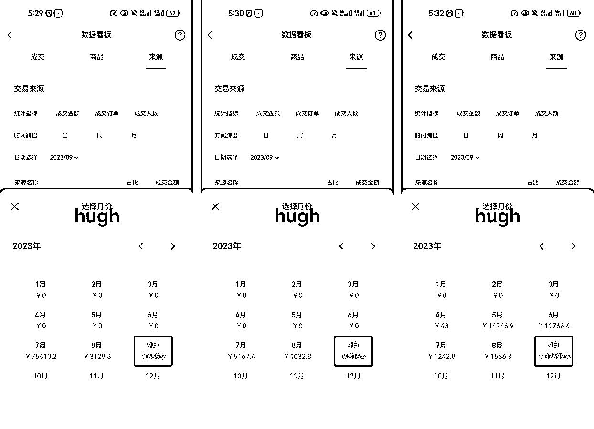

来源：https://i2mok5xev6.feishu.cn/docx/Y0hGduYtnot9WIxB1excr6S0nde
各位圈友好，我是Hugh，加入生财一年+。今年2月开始，全职做视频号带货，半年多单品类GMV 25w+，毛利润15w+。下面是其中六个主力账号的历史成交数据。

相比其他大佬的“快速打品”式玩法，我这种打法很佛系的，半年多主要死磕一个很细分的小类目。所以下面从五点谈谈，我这种玩法：
截止目前，我依然是以纯自然流的方式在做这个类目——精混剪短视频，视频起量后，开始直播转化。
大家都知道，自然流，最让人头疼的就是不稳定。因为门槛低，一但某一个品，某一个视频爆了，很快就会有同行跟进。所以自然流爆量，一般就两三天的事，再往后就是零星出单，甚至不出单。要想持续盈利，也只能不断地找新品、跟爆品。
但目前在做的这个品类，已经持续做了半年多。从2月到9月，月最低利润8k，月最高利润5w+，9月利润2w+。并大多主力账号，虽然是混剪，也持续使用了半年以上。所以相对来讲，还是比较稳定的。
下面我就拿室内挂画为例，从流量来源、客户需求两个角度，对这种现象进行分析讨论。
首先室内挂画，是个耐用品，同一个图案基本不太可能有复购，同一个图案也做不出太多不同的视频，同一个图案只会越来越难做。所以，要想把这个生意持续做下去，只能一直推新品，出不同图案的挂画。
因为一直有新的图案，所以就可以生产出不同的视频，也就能从平台上持续获得流量；也就能满足不同有软装需求的客户，持续产生成交。
也正因为视频内容都是室内挂画，所以账号标签就会垂直，一但找到固定的爆款模板，视频流量、转化也就会更稳定。当然，这种稳定并不等于“平均出单”。
以月的维度来讲，2-9月，每个月的利润大致依次为1w、1w、8k、2w、2w、5w、1w、2w；而具体到每个月，80%的利润都是在一周内赚到的，其他三周都是少量出单。
不断推出新的图案，是单品类能持续盈利的一方面原因；另一方面，也是因为主观选择了一个类目深耕，相比跨类目“打品”团队更聚焦，更容易快速发现同类目下的新爆品，也就更容易吃到新爆品的红利。
而当在某一个类目，持续多次拿到结果后，自己的信心也会增强，即使在三周甚至更长时间不爆的情况下，也能持续做下去。因为历史的经验告诉自己，这个类目会有周期波动，只需要坚持到关键的几天，就能在几天内得到一个月的回报。
当初为什么会找到这个品，其实也是机缘巧合，长时间刷带货短视频发现的。当我刷到这个品时，内心的第一反应是“我靠，居然有这样的东西存在，还有人会买”。
然后进入账号主页发现，这个账号以同样的视频模板，做这个类目，已经做了三个多月，并且每天发三五条视频，最低点赞量都在几十个。所以马上就开新号，照着混剪发视频。
第一天制作了十几条视频，定时每天发三条。第二天看数据，发现每一条都会获得推荐，最低播放都在4k+，于是继续准备了一周的视频。在第三天的时候，开通了橱窗，但一直到第六天都没有成交，所以第七天时内心是有点虚的。
而就在第七天下午，三天前的两条视频，突然开始爆量了，于是立马开直播。最终两条视频，都跑到了100w播放，一个人连续播了两天，最终盈利1w左右。
而在接下来的两个月里，一直都靠这一个账号，持续更新视频，每个月也能有一两条视频爆100w播放。期间也尝试过原创，但效果比不上混剪，同时成本较高，所以最终还是放弃了原创。而到4月底时，明显发现这个账号有点扛不住了：违规逐渐增多，被限流。
于是开始尝试矩阵，从一个号增加到三个号。很幸运的是，两个新号在5月时，全部起量都有达到100w播放，最终5月的利润比之前翻倍，达到了2w+。
尝到了矩阵的甜头，接下来账号数就从几个扩张到了三十几个，在7月时做到最高点，月利润5w+。
矩阵操作让我把利润从1w做到了5w，但矩阵并不只是简单加账号就完事的，其中有很多问题需要解决。
矩阵的第一前提就是，在保证质量的情况下，你的视频产出量也能随之增加。
我一直做的混剪，所以不考虑原创素材的生产，只考虑：
1、如何找到更多的原创素材来源；
2、保质的情况下，如何剪出更多的视频。
在5月时，我通过抖音扫码识物、巨量百应、搜产品名等方式，把原创素材源，从一个扩充到了十个左右，保证了足够多的素材来源。
至于视频的产出量，可以通过软件批量混剪，也可以通过增加人力提高产出量。但是因为我做的品，对视频的前后逻辑有要求，所以只有以人来精剪。于是在6月底，招了一个全职助理，混剪、直播、客服啥都做，把视频产出量提升了一倍。
当然，月薪4-5k的助理，不能对她有过高的期待。只能自己制定好，视频剪辑的SOP，让她照着执行。剪视频，首先需要解决的就是素材问题，虽然已经找到了足够多的原创账号，但如果每次剪一个品都重新从主页里去找相应素材，效率是极低的。
所以提升视频产出效率的第一步，就是创建素材库，对于小团队而言，素材库其实通过一个表格就解决了。
通过这样的表格记录，虽然初期填表格时会多花一点时间，但后期找素材的效率会越来越高。同时在以同样的剪辑手法进行视频生产时，降低了不同账号内容重复度的问题。
微信号的问题。可以通过注册卡来解决，一个人可以实名七十几张小运营商的卡，每张卡的成本十几块（卡费+年费）。至于辅助注册的问题，如果只需要几十个微信，初期找亲戚朋友帮忙就足够了。半年后就自己的这些微信号，就能满足持续辅助注册的需求了。
实名的问题。目前我手里有三十几个账号（同时使用的十个左右），总共使用了4个人的实名信息，自己、老婆、一个朋友、大嫂。一个人可以同时实名5个微信（开通微信支付），但是处于微信支付冻结状态的数量，理论上确实可以无限的。当需要某一个号时，人脸进行解冻就行，同时不会占用每年的实名次数。
选择怎么样的设备，其实需要根据自己的业务来定。刚开始做矩阵时，因为看了一位圈友的分享，也入手了一台全新的红米11t。但后面发现这个手机，直播效果不行，最终放弃。虽然苹果手机，直播没问题，但不满足原生多开的需求。所以目前买了7台二手的nova7，单台价格一千以内，支持原生多开，直播效果也满足需求。
另外就是网络问题。之前有圈友分享过，每次发视频前，都通过开关飞行模式来切换ip，但操作起来相对麻烦。所以我目前采用的方式是，相同实名的微信只在一个手机上登录，且每个手机都配上单独的流量卡，不直播时不连wifi。尽量模仿真实的个人使用情况，减少自己在考虑ip或者隐形降权等方面的内耗。
目前在用的流量卡，有广电、联通的，一个月30G流量，价格9-19元不等。
从8月开始，我花了差不多一个月的时间，注册公司、开通优选联盟、对接厂家等，基本跑通了后端业务。在不增加太多时间成本的情况下，把毛利润从50%提高到了70%。如果选择深耕一个类目，个人觉得是一定要去自己做后端的。下面是我踩过的一些坑：
最近的入池规则是：
1、店铺评分＞4.3；
2、结算订单＞100单。
因为7月底就开通了店铺，预计是8月初（等一周左右），所有矩阵号就可以接上自己的店铺。但实际，从出单到结算需要等20天左右，所以八月前半月很多安排被打乱。
九月中旬之前，自营店铺单日最高订单量都在100以内，所以都是人工复制订单到1688下单，问题也不到。但9月中旬，突然出了一个新品爆款，当然优选联盟只有很少几个店铺有链接，且链接转化做的不好。于是自己用店铺迅速上了优化后的商品链接，也成功的吃到了这波红利，一天多时间，成交了2k+单。
但到第二天傍晚时，突然发现以前的下单方式，根本处理不完订单。逼得停了直播，停止继续用新的矩阵号，去吃剩下的流量。只能全力去处理订单。
所以这波高峰过后，和一直合作的厂家进行了比较深入的沟通，他们在使用“店管家”。视频号小店一个月只需要花20元，对接上系统后，可以把订单信息同步到厂家后台，直接打单发货、回传订单号、自动点发货，完全不需要我们花时间处理订单。
当然不同厂家会使用不同的系统，如果决定长期做后端店铺，一定要在一开始就和供应商确定好系统，做好对接，别等需要时再来对接。
这一点是在做矩阵时，血泪的教训。4月底的时候，其实就已经开始准备做矩阵了，但当时没赚到太多钱，所以刚开始用来注册微信号的手机，全是之前给家里父母用的千元机，大多打开微信都会有点卡。
刚注册微信时，问题还不大，但开始发视频时，才发现根本没法用，严重的拉低工作效率和心情。所以就咬牙买了更高性能的手机，但在转移微信时，才发现大部分的微信都被风控了，不能转移到新的设备。再次导致矩阵迟迟不能上。
其实后面想想，像手机这种固定资产，只要你做短视频带货，是必备的，早买晚买都是买。千万别一心只想着短期成本，耽误了更重要的事。
别想太多，坚持“找对标，抄超”不动摇。
其实我是22年8月就在视频号赚到了第一笔钱，两个小时赚了6k+，后面几个月却一直在走弯路。
因为自己内心对“普通人”创业这件事，缺乏正确的认知，一直按照自己心里想的那一套去瞎搞。自然22年一直没有太好的结果。
记得盗坤大佬也说过——但凡我赚到钱的时候，都是因为跟着别人的赚钱模式在做；但凡我自己瞎搞的时候，都是没赚到钱的（大概是这个意思）。大佬都如此，我们这些入门阶段的小白，难道能一来就比大佬还牛？
当在某个行业浸泡足够多时间后，拿到一定结果后，再去微创新，才可能拿到更大的结果。
拿我自己7月的结果来说，其实就是因为在基础没问题的前提下，微创新了一条口播，把一条视频做到了500w播放（之前单条播放最高100w+），两天赚了3w+。现在很多做混剪的同行，还在用我这条口播。
当然，我这种深耕模式肯定会不适合很多人，但却是最适合现在的我。当我靠一个品类活了下来，并且把矩阵、直播、后端等基本功做扎实后，剩下的就是在此基础上，打出更多自己能做的品类。